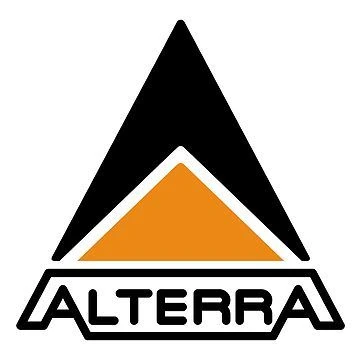

SeaWeed
Temporal range: Lutetian–Present
Kelps are large brown algae or seaweeds that make up the order Laminariales. There are about 30 genera.Despite its appearance and use of photosynthesis in chloroplasts, kelp is not a plant but a stramenopile.

Kelps are large brown algae or seaweeds that make up the order Laminariales. There are about 30 genera.Despite its appearance and use of photosynthesis in chloroplasts, kelp is not a plant but a stramenopile.
고래의 몸에 무겁게 달라붙은 따개비는 피부병과 저항을 유발합니다. 잠수부들의 섬세한 손길은 고래에게 다시 자유로운 헤엄을 선물하는 인도주의적 구조 활동입니다.
인간이 버린 폐그물과 플라스틱은 바다사자의 숨통을 조이는 족쇄가 됩니다. 우리는 바다사자의 몸에서 오염물을 제거하며, 우리가 만든 잘못을 결자해지(結者解之)하고 있습니다.
거대한 고래가 인간의 그물에 갇혀 사투를 벌이고 있습니다. 생명의 위협 앞에 종을 뛰어넘은 협력으로 그물을 끊어내고, 바다의 주인이 다시 깊은 심해로 돌아갈 수 있도록 돕습니다.